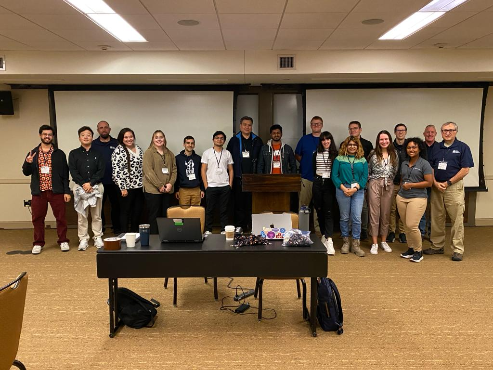

Enrique Sobrados

Cybersecurity Reasearch Assistant
Cybersecurity Reasearch Assistant
I am an enthusiastic computer science student at the University of New Mexico, Albuquerque, NM. I am currently pursuing my master's degree and will start my Ph.D. program in Fall 2024. I am very passionate about cybersecurity, most specifically, penetration testing. For that reason, you will find me playing a lot in Hack the Box. I am currently looking for opportunities to demonstrate my skills and apply my experience in the cybersecurity field.
I am working as a Cybersecurity Research Assistant, advised by Prof. Afsah Anwar. As an RA, my main research focus is mobile security in Virtual Private Networks (VPN). In this research, I focus on identifying security concerns within these VPN apps. Moreover, I am actively engaged with the cybersecurity research community by reading the most recent papers and attending conferences.

As a prove of that, in December 2023, I attended the Annual Computer Security Applications Conference. There my team obtained 1st place in the Tracer Fire workshop held by Sandia National Laboratories. This was a very enriching experience where I could test my teamwork and cybersecurity skills.
01/2023 - 05/2025
The University of New Mexico, NM
Master of Science in Computer Science
I am pursuing a master's degree in computer science focusing on VPN security applications at The University of New Mexico with an accumulated 4.0+ GPA.
01/2018 - 12/2023
The University of Engineering and Technology, Lima, Peru
Bachelor of Science in Computer Science
I started my professional career pursuing an undergraduate degree in computer science. During this period, I obtained strong foundations in cybersecurity, machine learning, software engineering, databases, and operating systems. I managed to maintain myself in the upper fifth of my class. Moreover, I had the opportunity to have an exchange program with UNM, and afterward, I decided to start a master's degree there.
08/2023 - Now
The University of New Mexico, NM
Cybersecurity Research Assistant
As a Cybersecurity Research Assistant since August 2023, I have dedicated the past six months to conducting in-depth research on VPN security issues within the South Asia region. A significant accomplishment includes automating the data collection process for the top 30 VPN applications used across all countries in South Asia, enhancing efficiency in analysis and assessment. Additionally, I played a pivotal role in establishing a dynamic analysis infrastructure utilizing Virtual Machines, proxies, Android endpoint devices, and Virtual Networks. This infrastructure simulates real-world VPN usage scenarios, contributing to robust testing and research efforts. My responsibilities extend to comprehensive analysis of VPN applications, involving transparent mode proxies and employing reverse engineering techniques to evaluate security features and identify potential vulnerabilities. I am actively engaged in staying updated on the latest developments in VPN security by reviewing academic papers and state-of-the-art studies across academic, enterprise, and personal VPN usage domains.
01/2024 - Now
The University of New Mexico, NM
Teacher assistant, Introduction to Cybersecurity
As a TA, I am in charge of the setup and configuration of hands-on labs for Introduction to Cybersecurity courses, aiming to provide students with an optimal learning environment. Through close collaboration with instructors, I actively contribute to the creation of engaging and relevant content for homework assignments and lab exercises, ensuring alignment with the curriculum objectives.
07/2022 - 12/2022
National Bank, Lima, Peru
Security Analyst Internship
I played a pivotal role in fortifying the bank's digital assets by overseeing the management of VPN and web filtering (Proxy) systems for internal users, guaranteeing secure and uninterrupted access to critical resources. Demonstrating a steadfast commitment to enhancing the bank's security, I conducted thorough research to identify and address security weaknesses, diligently documenting discoveries and proposing effective solutions. My contributions extended to operational efficiency improvements, where I streamlined and optimized complex procedures, resulting in enhanced workflow and resource utilization across the organization. Actively engaging in weekly meetings dedicated to bolstering the bank's perimeter security, I provided valuable insights and recommendations to safeguard against emerging threats. Additionally, I played a significant role in the evaluation and implementation of cutting-edge security solutions, particularly in proof of concepts for web filtering and Endpoint Detection and Response (EDR) systems. Collaborating with the security team, I also contributed to the generation of cryptographic keys for ATMs, ensuring the confidentiality and integrity of sensitive financial transactions.
08/2023 - 12/2023
The University of New Mexico, NM
Teacher Assistant, Declarative Programming
I assumed the crucial responsibility of grading assignments and exams, ensuring a fair and objective evaluation process. This multifaceted role allowed me to directly engage with students, offering both academic support through office hours and maintaining the integrity of assessment processes by diligently grading assignments and exams. Through these efforts, I aimed to contribute to a positive and enriching learning experience for students under my guidance.
07/2021 - 09/2021
Le Wagon, Remote
Bootcamp Teacher Assistant, Web Development
I took a proactive approach in mentoring students on secure development practices, particularly during web development sessions. I provided hands-on assistance to students encountering challenges in Front-end development, ensuring their comprehension of key concepts and facilitating practical application. Responsive to students' inquiries, I offered timely support through Slack, fostering a collaborative learning environment that contributed to their success in the course. By combining theoretical understanding with practical guidance, I aimed to empower students with the skills and knowledge necessary for secure and effective web development practices.